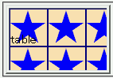

テーブル行要素（tr要素）に背景関連のプロパティを指定すると、background-position, background-repeat, background-attachmentの各プロパティの指定が無視される。
<style type="text/css">
tr {
background-image:url('img01.png');
background-position:right center;
background-repeat:repeat-x;
}
</style>
<table border="2">
<tr><td>table</td></tr>
</table>
| table |
背景画像はテーブルの各行の中央に右詰めで、横方向だけに繰り返して並べられるはずです。
Netscape7.1標準モード
Opera7.23標準モード
テーブルセル要素（th, td要素）ではこれらのプロパティも認識されます。
Opera6.06、Opera7.23の標準モードと互換モードで不具合の発生を確認しました。